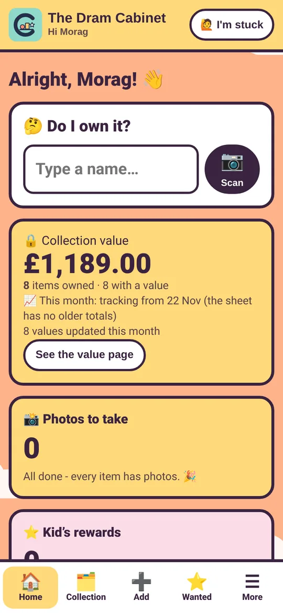
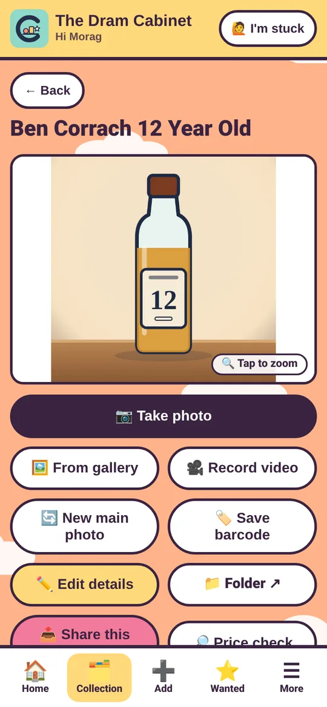
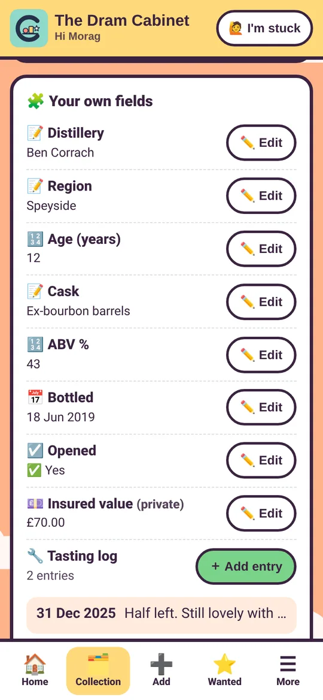
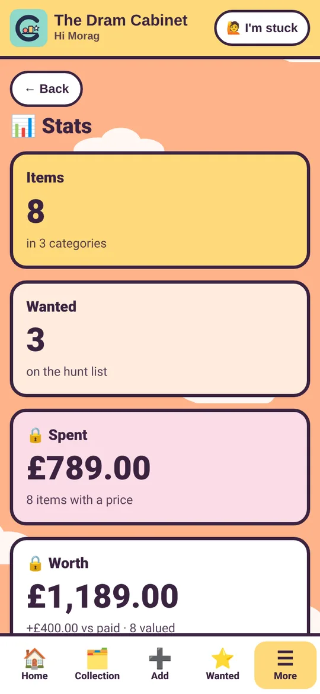
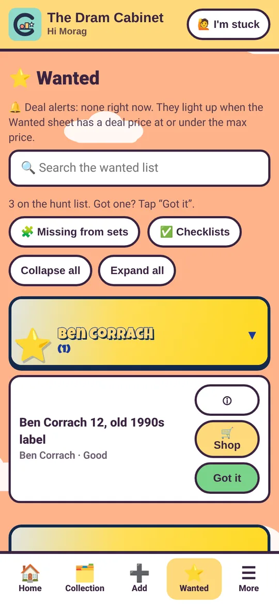
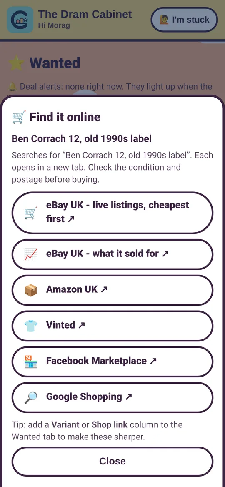

Example
Ben Corrach 12 Year Old
- Distillery
- Ben Corrach
- Age (years)
- 12
- Cask
- Ex-bourbon barrels
- ABV %
- 43
£65+£23 vs paid
Example collection · invented data
Whisky
Morag keeps 40-odd bottles in a glass-fronted cabinet. In Collecson each one has its distillery, age, cask and strength, a tasting log she adds to whenever a bottle is opened, and what it is worth today.
M“The Dram Cabinet” · Morag, Perthshire (an invented collector)


Your own fields
Out of the box Collecson knows names, photos, condition, year and value. For this collection the owner tapped ＋ Add field a few times:
Example item · Single malt
Core range · Mint · Boxed
🔒 Money fields and log costs only show after the owner unlocks with their PIN. Family can fill in the other fields; Kid mode never shows prices.
The collection
Each one has its own photo folder in Drive and a row in the owner’s Google Sheet. These are illustrations of invented items.
In the app
Real Collecson screens, running the invented example collection.



Value
Paid, worth and the difference, item by item. Only the owner sees money.
Wanted list
Each wanted item keeps a max price and notes. In the app one tap opens live searches: eBay UK (live and sold), Amazon UK, Vinted, Facebook Marketplace and Google Shopping, or the owner’s own saved shop link.
Loch Fennan · Sealed · The big sister to my 18
Isle of Skerra · Boxed · Any year
Ben Corrach · Good · For a side-by-side tasting
On this page the shop buttons are examples only. In the app they’re search links: they don’t guarantee the lowest price, and no shop pays to appear.


ROOM FOR WHAT YOU LOVE
Collecson works for whisky and just about anything else you collect. It isn’t on sale yet: no payment, sign-up or public template link.